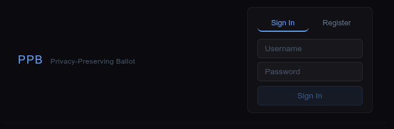
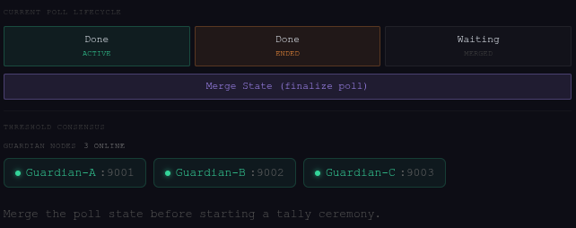

[ Blockchain & PPB Polling ]

PPBunny, the mascot for PPB Polling. Illustrated by Chelsea Hodum.
| Project | Insights | Technical |
|---|
Genesis of PPB
Privacy Preserving Blockchain (PPB) is the basis of our project.
Seniors in the VCU College of Engineering must complete a year-long capstone project. We were given a list of some 140 to pick our top 10 from, of which Privacy Preserving Blockchain was my 7th pick.
The name of the project matches the whole description; how we were to use blockchain to "preserve privacy" was entirely up to us as a team. Let me get this out of the way now: I knew nothing about working with crypto and blockchain.
While I wasn't thrilled with this project assignment, I ended up enjoying working on it and am very pleased with the result.
This writeup will detail the development and structure of this project, I promise it'll be more interesting than it may seem.
The PPB Project
We probably had the most freedom of any of the capstone projects, which proved to be a double edged sword.
- The Good: As long as we worked with blockchain and "preserved privacy", we could pretty much do whatever we wanted.
- The Bad: We had no initial direction, and being inexperienced with blockchain made it difficult to determine where to go.
From our ideas, we settled on the most feasible: a blockchain polling system. (Another idea was a blockchain-based domain registrar, more on this later)
Polling systems are a very common use case for blockchain technology, and our faculty advisor, Hong-Sheng Zhou, has papers published on this very topic.
Applications of Blockchain
Is blockchain actually used anywhere other than cryptocurrency? If we ignore DeFi, cryptoexchanges, and things like NFTs we see a few commercial applications:
- Decentralized Identity - Identity Verification Systems that don't rely on centralized databases for verification. Think being able to verify your RealID with an employer through a cryptowallet.
- Private, Permissioned Blockchains - Distributed Ledgers, internal private blockchain networks used for auditing of financial history and transactions.
- Targeted Supply Chains - In scoped cases supply chain management incorporating blockchain has worked well. Walmart uses blockchain for tracking the sources of procured food. De Beers successfully used the blockchain software Tracr to trace diamonds from their source.
The biggest barrier of blockchain is its complexity and speed. There was a time where there was a lot of optimism with incorporating blockchain into global supply chains or healthcare systems. These ambitions have fallen through, with a few notorious cases.
The problem? Blockchain encourages "trustlessness", and while blockchain accomplishes this, we still can't trust the people using it.
Blockchain is:
- GREAT for decentralizing systems and their infrastructure.
- GREAT for publicly accountable ledgers and systems.
- GREAT for creating private systems with cryptography.
- AWFUL for high throughput systems and tasks.
- AWFUL for replacing existing tech infrastrcture.
- AWFUL for storing complex or large data.
Looking at proposed implementations of blockchain we can see why it fell through when taking into account its strengths and limitations. Can you really store healthcare information on the blockchain? Due to the complexity of the data and its inherent immutability once on the blockchain: its not practical.
Blockchain may not be universally applicable but it's still a very useful technology. Let's look at a case where blockchain technology is very applicable.
A Case For Blockchain Domain Registrars
As previously mentioned, my proposal for a project was a blockchain-backed domain registrar. Decentraweb is an example of this.
Problems with our current domain registration system:
- Centralization - Domain registration is wholly controlled by the centralized authority ICANN. ICANN controls who can have IPs and domain names and have the authority to revoke them at their will. (More on this soon...)
- Privacy (Lack thereof) - Domain registration is by design against privacy, requiring owners to provide contact information when purchasing a domain. This is all also publicly available through ICANN Lookup and Whois.
- Vulnerabilities - DNS is subject to spoofing, phishing, and cache poisoning.
- Security - (Soon) SSL certificates through certbot must be renewed every 47 days for valid HTTPS connectivity.
So how does a blockchain backend for this resolve these problems?
- Decentralization - Domain names would be wholly controlled by their owners in a P2P architecture. No central authority may charge you a lease for having it or revoke it from you.
- Optional Anonymity - Domain owners may pseudonymize themselves to prevent their data from becoming publicly accessible in Whois databases.
- Security - The benefits of a blockchain based domain registrar are immense. The blockchain is an indisputable source of truth, verifying absolutely that you own this domain.
One of the most important pieces here is that domain registration doesn't need high throughput or latency. It's more than acceptable for a transaction to take a few minutes in the case of domain names, we already wait a while for DNS records to propagate! Furthermore, domain registration is a very simple data primitive, just a string associated with it's owner.
The issue with Decentraweb, and other web3 domain registrars, is that they are exclusively web3. They don't sell common TLDs, like .com or .org, they instead sell web3-specific ones like .limitless. This is not to take away from their product; I just believe the technology should be appropriated for all common TLDs.
MACI & Our Goal

The MACI Logo
Let's return to our PPB capstone project.
One large benefit of going with polling is that there is a prevalent ecosystem of voting projects, and more importantly, frameworks for blockchain polling.
MACI stands for Minimal Anti-Collusion Infrastructure. It provides the smart-contracts that make private, secure blockchain voting accessible for development. The MACI framework is invaluable to blockchain voting systems. While reading the MACI roadmap I came across an interesting statement:
"It's no secret that one of MACI long standing issues has [sic] having a centralised coordinator. They are able to see all of the votes in cleartext, which allows them to collude with bribers themselves, as well as voters."
"Perfect!" I said in response. Not in celebration of voter privacy being violated, but now we had a goal: do something about the MACI coordinator.
The project was no longer just another blockchain voting system, it would be about pushing the boundaries of anti-collusionary voting.
Smart Contracts
Smart Contracts establish terms of agreement between parties, what makes them "smart" is they are actually pieces of code that exist on the blockchain network. These are immutable (never-changing) and independent, meaning they reliably carry out their functions.
MACI has a set of smart-contracts, each providing a different piece of functionality necessary to the voting system. Notable are:
MACI.sol- The core contract, providing access to creating polls and signing up users.Policy.sol- Defines the registration process for MACI polls, providing several authentication options. The default, "FreeForAll", allows anyone to sign up.PollFactory.sol- Deploys new polls. Every time a poll is created, it gets three corresponding smart contracts:Poll.sol- Accepts votes and accepts users into the poll.MessageProcessor.sol- Prepares parameters for zk-SNARK circuits (More on these later...) for verifying proofs.Tally.sol- Submits processed votes to the tally results.
There are a few other smart contracts but these are the primary players in our system. The contracts are able to communicate between each other, but there is a missing piece: Where do votes, users, and polls come from? They come from MACIs Coordinator.
MACIs Coordinator
The coordinator is responsible for sending user registrations to MACI.sol, sending poll creations to PollFactory.sol, and sending votes to Poll.sol.
The coordinator is NOT on the blockchain. Rather it is a backend system for managing and interacting with all of the smart contracts. MACIs Coordinator is a set of APIs that may be used to interface with the contracts.
The MACI important coordinator endpoints are:
{domain}.{tld}/v1/deploy/maci- This deploys the MACI smart contract, starting the MACI service.{domain}.{tld}/v1/deploy/poll- Deploys a new poll on the MACI instance. Needs start / end dates, candidate count, and voting mode.{domain}.{tld}/v1/subgraph/deploy- Deploys the MACI subgraph which indexes and tracks the created smart contracts.- Poll Finalization Endpoints
{domain}.{tld}/v1/proof/merge- Merges all votes into a Merkle state tree.{domain}.{tld}/v1/proof/generate- Generates a zk-SNARK proof for the final tally.{domain}.{tld}/v1/proof/submit- Submits the final tally.{domain}.{tld}/v1/schedule/poll- Schedules a poll to automatically finalize (running merge, generate, and submit) once it's end time passes.{domain}.{tld}/v1/health- Checks that env variables are correct, zkeys are accessbile, and if rapidsnark is available.
MACI 3.x offers a UI interface for their coordinator service, earlier versions did not offer this and thus every command needed to be entered from a command line or scripted together in a backend tool.
Where To Begin
Our original intention was to fork an already existing voting software, such as zkElect, PolyVote, or AnonVote. However after testing out a few of these I ran into several issues:
- Setup - Setting up these projects was always very difficult due to each having specific environmental configurations.
- Usability - They all required you to bring your own crypto wallet. This is a massive barrier for entry and makes it way harder for the average end-user to participate.
- Extensibility - Without knowing or understanding the structure of these projects it's not easy to extend them with our desired upgrades and functionality.
The real killer here is bringing your own crypto wallet, it makes testing, development, and participation more difficult. With zkElect to create a poll I had to install a crypto wallet, register an account, then hook it up to our virtual ethereum network.
Not enough funds. - the error says. Okay, to add funds to my wallet on a virtual network I need to access the deployer wallet and distribute myself some Ethereum. I deploy a poll, and go to vote on it.
Not enough funds. - the error says. I guess it cost too much to deploy the poll and now I'm out of Ethereum.
I think you understand the point, crypto outside of the major currency exchange platforms isn't very accessible. Here is where our three major project requirements cemented themselves:
- Make the backend extendable - The backend must be extensible so that it may be decentralized, preferably written a language simpler than TypeScript.
- Make it accessible - Abstract away as much, if not all, of the cryptocurrency/wallet aspects from end-users.
- Weaken the coordinator - Mitigate the amount of control the coordinator has over the entire voting system; reduce its value as a target for malicious actors.
By focusing on the first requirement the rest become easier. The project would no longer be a fork, instead it was to be built from the ground up on the foundations of MACI.
Weakening The Coordinator
The coordinator is necessary for MACIs function; it's also its Achille's Heel. As stated by the developers of MACI: if you can access the coordinator you can see everyone and their votes. Ideally, we could have multiple coordinators that must act in consensus to conduct their responsibilites. This is not an easy approach and it still has poses some problems:
- Eventually somebody has to hold the decryption key, we'd still have a single "super node".
- Implementing consensus on multiple coordinator nodes would be extraordinarily difficult. We can only rely on majority rules, such as the Byzantine Fault Tolerance (BFT) limit of
n≥3f+1. We'd need a lot of computers. - Voting becomes less reliable. We would need to make sure a vote reaches every coordinator node using a broadcaster system. Then how do we handle when the votes get out of sync or have time arrival differences at nodes?
So decentralizing the coordinator is impractical; instead we need to weaken it. This is where the simplest solution comes in: keep the decryption key out of the coordinator.
It would need it eventually, but by removing it until the time of decryption the coordinator is a far weaker entity in the MACI system. It wouldn't help much to just keep the key on another server, so we can actually split the key into pieces using Threshold Key Cryptography and share pieces to as many independent nodes as we want.

This is a Guardian Node system. Independent nodes will each hold a piece of the split key, the coordinator will request the key pieces when it's ready to finalize the poll, and the nodes may choose to provide their share.
With this system:
- Guardian nodes can be modified to run a set of integrity checks on the coordinator and blockchain before sharing their key piece.
- Votes cannot be read until a consensus is reached among the guardian nodes AFTER the poll has been finalized.
- We can control how many pieces we split our key into and the necessary threshold to reassemble it.
- The Backend - The central server that communicates with the smart contracts, guardians, and clients.
- The Guardians - A set of nodes each holding a share of the split decryption key.
- The Threshold - A program that breaks the private decryption key into
kpieces, sets the threshold for reassembling the key, then distributes it to the
Threshold Cryptography & Secret Sharing
Our guardian is built on the concept of a Threshold Cryptosystem where we split out secret key among a number of independent parties.
The Frontend
The frontend for PPB Polling is a React/Vite webapp written in TypeScript. TypeScript was chosen because MACI is written in it. The webapp is split into three sections:
- The user interface - where people register, log in, and vote.
- The admin interface - where the admin can deploy, merge, and finalize polls.
- The demo interface - a demo site for our expo on the project, provides an interactive visualization of the system.
Initially the site was a single-page webapp containing the user and admin interfaces with styling generated by Claude. I eventually got tired of the visual clutter of the interface and the overall "web3 aesthetic" of the site, so I redesigned it to be much simpler.

A screenshot of the current PPB login page.

A screenshot of the current PPB admin panel.
The frontend isn't just an interface for using the MACI API calls though, it handles some important privacy-preserving functionality. This includes an account keypair, and one temporary keypair per vote.
MACI Identity Keypair - Generated with BabyJubJub. When you register an account, a keypair is generated.
- The public half of the keypair is sent to the coordinator to register the user. The private half never leaves the client.
- When the client votes, the vote is signed with their private key. This proves it's a legitimate vote, and allows a user to change their vote until the poll has ended.
This keypair allows a user to join polls with a ZK-proof, meaning a user can say "I know a the private half of a public key that's registered." This is done without revealing the public key in question, preventing double-registration.
The "Vote" Keypair - Generated with BabyJubJub every time a user casts a vote.
- This encrypts the PCommand (vote message format) and removes all linkability between votes, meaning a user can't be triangulated off multiple votes.
- These keypairs are used once, then discarded.
What about the crypto wallets?
They're gone.
Everything crypto related is handled by the backend. Voting on PPB Polling requires not an ounce of knowledge on cryptocurrency. I'll go into more detail about how we abstracted this away from the end user when I talk about the backend.
The frontend is not just a UI atop MACI, it plays a vital role in protecting users confidentiality and privacy.
The Private Half of the Identity Keypair
In the last section I noted that the private half of the identity keypair never leaves the client. This is an intentional design choice recommended by MACI. When creating the identity keypair we have two routes to go:
- Send the whole keypair to the server.
- THE GOOD: Users could sign in from any device since they can recall their private-key from the server.
- THE BAD: If the private-keys were accessed by a malicious actor or made public, all votes could be decrypted and read in plaintext. The coordinator becomes a supreme liability and single-point-of-failure.
- Only send the public half of the keypair to the server.
- THE GOOD: As long as a user keeps their private key secret, their votes will be encrypted, thus untraceable.
- THE BAD: If you lose your private key, you lose your account. You also cannot vote on other devices.
Weighing the good and bad, it's preferable to lose user accounts than it would be to lose the anti-collusion functionality of the server. This is the nature of blockchain though; centralized trustlessness means decentralized responsibility.
Potential PPB Polling upgrade: Keep a users private key encrypted locally and only decrypt it when they've entered their password.
Zero-Knowledge Proofs & zk-SNARKS
Zero-Knowledge Proofs (ZKPs)
Zero-Knowledge Proofs are foundational to how MACI creates a private, collusion resistant voting platform. Quoted from Ethereum.org:
A zero-knowledge proof is a way of proving the validity of a statement without revealing the statement itself. The ‘prover’ is the party trying to prove a claim, while the ‘verifier’ is responsible for validating the claim.
Let's say I'm the prover, and you are the verifier.
The Statement: Lightning McQueen is hidden in this picture.
A picture filled with cartoon characters, with Lightning McQueen hidden among them.
I know where the hidden Lightning McQueen is in this image. Here's my proof:
I haven't helped you find it, but you should know believe that I know where it is. This is a rather silly analogy, but it illustrates the point well. I've proven that I know certain information, without revealing anything about said information.
There is always a chance a proof could be guessed. To account for this, provers and verifiers run ZKPs by each other many times, to virtually eliminate the chance of solutions being arbitrarily guessed. zk-SNARKs do not require this multi-pass setup however.
How do they actually work?
ZKPs and zk-SNARKs are advanced cryptographic methods for validation. They enable authentication by the verifier while maintaining the anonymity of the prover. I'll explain the fundamentals of how they work to provide a better understanding of how MACI can protect voters privacy, while still only counting legitimate votes.
Computationally Asymmetric Problems - These are problems that are easy to verify, but hard to solve. Let's say I have the semiprime number 7.01770176x109. What two prime numbers make up this number? It may be a bit difficult to compute that but if I gave you 83557 and 83987 and tell you it's the factors, you can easily multiply them to verify if I'm correct. The point here is we can verify correctness easily without exactly being able to reverse-engineer the problem.
Polynomials - ZKPs convert statements into polynomial equations. The verifier then picks a random point and checks where it lies on the polynomial, a fake polynomial has a miniscule chance of getting the correct number. To use our previous example, we could try guessing random prime numbers, but the odds of picking the correct one are highly improbable. This is the foundation of interactive ZK proofs. However this is impractical in blockchain settings.
Non-Interactivity through Fiat-Shamir Transform - Bear with me here. Instead of the verifier sending random challenges, they just send a hashed value of their transcript so far. This means it can automatically generate unpredictable values to challenge the prover, so a dedicated verifier is unnecessary.
zk-SNARKs
Stands for Zero-Knowledge Succint Non-Interactive ARgument of Knowledge. zk-SNARKs are special in that they require no interaction between the prover and verifier, their proof size is small, and verification is fast. MACI uses zk-SNARKs, specifically Groth16 proofs, exclusively.
SNARKs require a trusted setup ceremony, a computation involving multiple parties that generate public parameters called a Common Reference String (CRS). While the ceremony is happening; every attending party generates a secret, random value that contributes to the CRS. This value is called the "trapdoor", leaking of these values can lead to security compromises. So long as a single participant destroys their "trapdoor", the system is secure. This "trapdoor" leakage threshold is variable depending on the SNARK scheme being used.
I am not the person to explain them in full detail, so I will provide some links if you'd like more advanced coverage of the subjects. I know enough about them to understand their purpose in MACI
The Backend
The backend is responsbile for connecting every piece
The Coordinator Keypair - The keypair used to decrypt votes. We use Shamir's Secret Sharing to divide the private key, creating a fault-tolerant threshold protection system. This allows us to remove the ability for the backend to see votes in plaintext, resolving a major issue in MACI.
The Guardians
Chungus Ipsum. Chungus Ipsum. Chungus Ipsum. Chungus Ipsum. Chungus Ipsum. Chungus Ipsum. Chungus Ipsum. Chungus Ipsum.
Chungus Ipsum. Chungus Ipsum. Chungus Ipsum. Chungus Ipsum. Chungus Ipsum. Chungus Ipsum. Chungus Ipsum. Chungus Ipsum.
Chungus Ipsum. Chungus Ipsum. Chungus Ipsum. Chungus Ipsum. Chungus Ipsum. Chungus Ipsum. Chungus Ipsum. Chungus Ipsum.
Chungus Ipsum. Chungus Ipsum. Chungus Ipsum. Chungus Ipsum. Chungus Ipsum. Chungus Ipsum. Chungus Ipsum. Chungus Ipsum.
The Development Environment
Chungus Ipsum. Chungus Ipsum. Chungus Ipsum. Chungus Ipsum. Chungus Ipsum. Chungus Ipsum. Chungus Ipsum. Chungus Ipsum.
Chungus Ipsum. Chungus Ipsum. Chungus Ipsum. Chungus Ipsum. Chungus Ipsum. Chungus Ipsum. Chungus Ipsum. Chungus Ipsum.
Chungus Ipsum. Chungus Ipsum. Chungus Ipsum. Chungus Ipsum. Chungus Ipsum. Chungus Ipsum. Chungus Ipsum. Chungus Ipsum.
Chungus Ipsum. Chungus Ipsum. Chungus Ipsum. Chungus Ipsum. Chungus Ipsum. Chungus Ipsum. Chungus Ipsum. Chungus Ipsum.